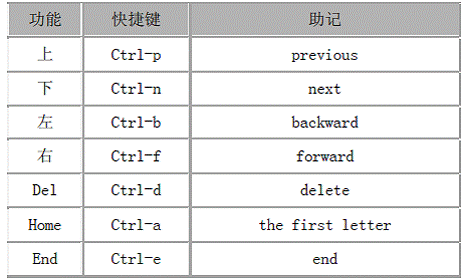

我们从上面可以看出，Tab补全本身就具备了ls的功能，上面的Tab补全相当于ls -Fd De*命令。所以我们完全不必反复地cd到别的目录然后ls去找文件，多按几次Tab就可以一条命令完成了，这样的好处是我们的当前目录不用变，不需要找完了文件再cd回来，同时省去了大量的按键次数。更重要的是，自动补全同时兼具了检查拼写错误的功能，如果前面几个字母拼写错了，就补全不出东西来，用户就知道拼写错了，如果前面几个字母没有拼写错，那么由系统补全出来的文件名肯定也不会有拼写错误，避免了用户在敲很长的文件名时易犯的拼写错误。
历史记录是另外一个非常方便的功能。按上下移动光标键（或者Ctrl-p、Ctrl-n）可以一条一条浏览以前输过的命令。如果有需要重复输入的命令就不用输第二次了。如果你能记住以前输过的某条命令中的某个关键字，可以按Ctrl-r，然后输入关键字，随着你每输入一个字母，bash会做增量式（increasingly）查找，也可以反复按Ctrl-r或Ctrl-s向前向后查找。如果找到了，按左右移动光标键或Home键(Ctrl-a)或End键(Ctrl-e)将该命令带回提示符下进一步修改，或者直接按Enter键原封不动地执行该命令。
bash的快捷键和emacs保持一致，用惯其中之一再用另一个程序会很顺手的。请记住一条原则：尽量使用主键盘快捷键而不使用移动光标键和编辑键。因为手不必离开主键盘是效率最高的，这样在你一生之中所节省的来回移动手的时间绝对可以用星期来计算，是绝对值得你花十分钟的时间记住这些快捷键的。

cd [dir]